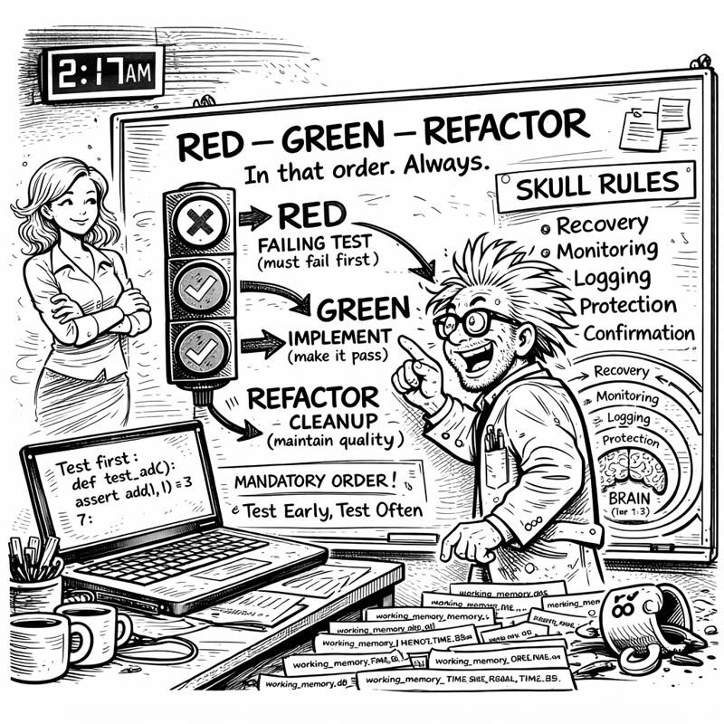
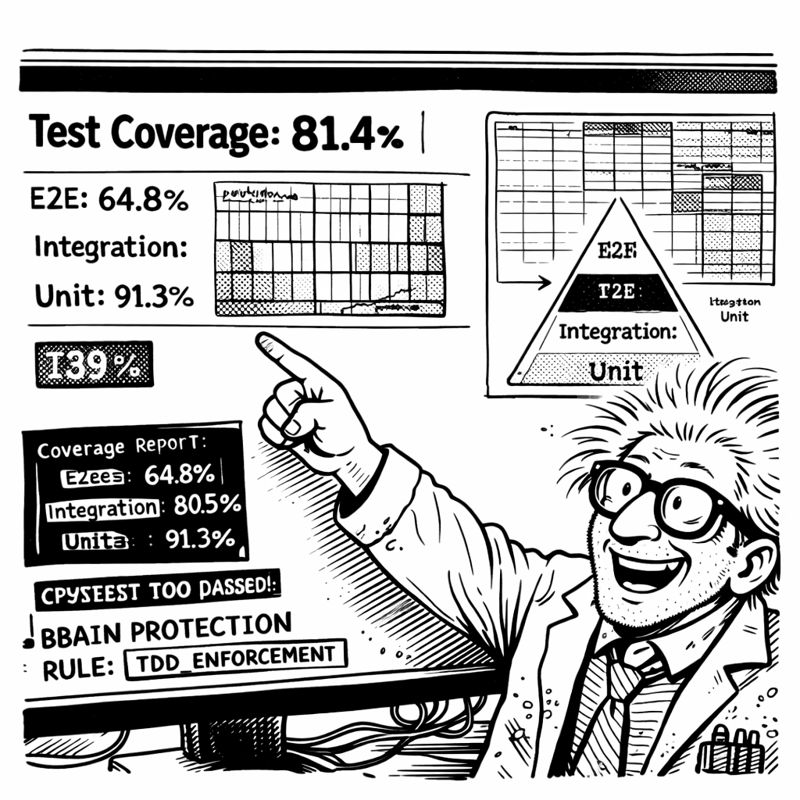

In which I realize I've been doing the same thing manually for two months while building automation
I was writing my tenth feature plan of the week when I finally snapped.
Not dramatically. No throwing things. Just a quiet, exhausted realization that I was copying the same template AGAIN when I'd spent two months building a system specifically designed to automate repetitive work.
The irony was not lost on me.
I stared at the document:
# Feature Plan: [NAME]
## Definition of Ready (DoR)
- [ ] Requirements clear
- [ ] Acceptance criteria defined
- [ ] Dependencies identified
- [ ] Complexity assessed
## Implementation Phases
1. RED: Write failing tests
2. GREEN: Implement functionality
3. REFACTOR: Clean and optimize
## Definition of Done (DoD)
- [ ] All tests passing
- [ ] Code reviewed
- [ ] Documentation updated
The SAME structure. Every. Single. Time.

"There must be a better way," I muttered.
Miss G's voice echoed in my head: "What must have a better way?"
"PLANNING. I'm writing the same plan over and over. Same DoR checklist. Same DoD validation. Same complexity assessment."
"So... automate it? 🤔"
I stopped typing. "What?"
"You've been building AUTOMATION for two months. AUTOMATE THE PLANNING."
"But every feature is different—"
"Is the PROCESS different? Or just the details?"
I stared at my screen. The process was identical. Only the feature-specific details changed.
"Oh my god."
"You're welcome. Now let me sleep. 😴"
At 3:47 AM (my traditional time for revelations), I had the whiteboard covered:
HIGH Complexity: Security features, authentication, database migrations, API integrations, payment processing.
MEDIUM Complexity: CRUD with business logic, multi-step workflows, caching strategies.
LOW Complexity: Simple CRUD, UI components, configuration updates.
"It's pattern matching," I said to no one. "Keywords trigger complexity. 'auth', 'security', 'payment'—they mean HIGH automatically."
I pulled up a new file: planning-system-2.0-manifest.yaml
complexity_triggers:
HIGH:
keywords: [auth, security, payment, migration]
approach: incremental
mandatory_phases: [DoR, TDD_RED, TDD_GREEN, TDD_REFACTOR, DoD]
MEDIUM:
keywords: [workflow, state, cache, business_logic]
approach: conditional
LOW:
keywords: [crud, ui, config, static]
approach: skeleton
Simple. Pattern-based. Automatable.
The orchestrator would analyze the feature request, detect complexity from keywords, select the right template, and generate everything automatically.
"I'm going to automate planning," I announced.
"At 4 AM?" Miss G's presence materialized with appropriate skepticism.
"Inspiration doesn't respect business hours!"
"Neither does insanity. But go off, I guess. 🌙"
Building the manifests took three days. Not because the orchestrator pattern was hard—that part was easy. The hard part was getting the templates right.
"What's DoR?" Miss G asked during one of our brainstorming sessions.
"Definition of Ready. Checklist that proves you understand the feature BEFORE coding."
"Like planning a trip before booking flights?"
"Exactly! You need destination, dates, budget clear BEFORE booking. Otherwise you book flights to the wrong city."
"And you've been booking flights to the wrong city?"
"I've been booking flights without checking if I have a PASSPORT." I gestured at my screen. "DoR ensures all prerequisites are met. Requirements clear. Dependencies identified. Complexity assessed."
"And DoD?"
"Definition of Done. Validation that the feature is ACTUALLY complete. Tests passing. Code reviewed. Documentation updated."
"So... quality control gates?"
"Exactly."
"And now Copilot enforces them?"
"Can't skip DoR. Can't skip DoD. Can't skip TDD. The manifest makes it MANDATORY."

"The AI is now your responsible parent."
"The AI is now my ACCOUNTABILITY PARTNER."
"Same thing. 😏"
Thursday morning. Testing time.
I typed: "Plan: Add user authentication with JWT tokens"
Copilot's response appeared:
🎭 Planning System 2.0 Engaged
Complexity Detection:
- Keywords: authentication, JWT, tokens
- Security implications: HIGH
- Approach: INCREMENTAL with full DoR/DoD gates
# Feature Plan: User Authentication with JWT
## Definition of Ready (DoR)
**Requirements:**
- [ ] Authentication flow specified
- [ ] Token expiration policy defined
- [ ] Security requirements identified
**Dependencies:**
- [ ] JWT library selected
- [ ] Token storage approach determined
- [ ] HTTPS enforcement verified
**Complexity Assessment:**
- Level: HIGH (security-critical)
- Estimated effort: 8-12 hours
## TDD Phases
### Phase 1: RED
Write failing tests for token generation, validation, refresh...
### Phase 2: GREEN
Implement incrementally...
### Phase 3: REFACTOR
Security audit mandatory...
## Definition of Done (DoD)
- [ ] All tests passing (100% coverage)
- [ ] Security review completed
- [ ] SKULL rules validated
✅ Plan ready. DoR must be completed before implementation.
I stared at the screen.
"It auto-detected HIGH complexity," I whispered.
"What?" Miss G's attention snapped into focus.
"IT AUTO-DETECTED. I just said 'authentication' and it KNEW. Security-critical. Incremental approach. TDD mandatory. All AUTOMATIC."
"Is this good or are you panicking?"
"THIS IS REVOLUTIONARY!"
I had to make sure it wasn't a fluke.
"Plan: Add user profile page"
Complexity Level: LOW
Approach: SKELETON
Minimal gates, basic tests
"Plan: Implement payment processing with Stripe"
Complexity Level: HIGH
Security-critical, full DoR/DoD, TDD mandatory
"Plan: Add caching layer for API responses"
Complexity Level: MEDIUM
Business logic considerations, suggested TDD
Every. Single. One. CORRECT.
"It's planning better than I plan," I said.
"Show me everything," Miss G demanded.
I walked her through the authentication plan. The complexity detection. The comprehensive DoR. The TDD integration. The thorough DoD.
"This is more thorough than your wedding planning," she observed.
"We didn't really plan our wedding."
"I know. That's my point. 💒"
"The AI learned from my mistakes."
"The AI is more organized than you've EVER been."
"The AI enforces the discipline I SHOULD have had all along."
Friday afternoon. Simple API endpoint needed. Basic CRUD. Would normally take 30 minutes.
Instead, I asked: "Plan: Add endpoint to update user profile information"
Complexity: LOW. Skeleton approach.
But the plan still included: - Basic DoR (requirements clear, schema confirmed) - Test requirements (validation, success cases, error handling) - Basic DoD (tests passing, endpoint documented)
I followed it. Tests first (RED). Endpoint (GREEN). Cleanup (REFACTOR). DoD validation.
Total time: 45 minutes instead of 30.
But: 100% test coverage. Full documentation. Zero edge cases missed.
"Worth fifteen extra minutes?" Miss G asked.
"Zero production bugs from planned features. Versus three per week from 'quick fixes.'"
"So the planning revolution worked?"
"The planning revolution ENFORCED discipline. I can't skip steps anymore. The system WON'T LET ME."
"Good. It's the responsible adult you've always needed."
"It's the responsible adult I've always BEEN. Just inconsistently."
"'Inconsistently' is doing a LOT of heavy lifting there. 😂"
Fair point.
I looked at the planning manifest. DoR gates. DoD validation. Complexity classification. TDD integration. All automatic. All enforced. All consistent.
Four days until Christmas decorations deadline. Still needed: ADO Operations, Code Sanitization, final integrations.
But now I had automated planning. The AI wouldn't let me skip steps anymore.
Even when I tried.
ESPECIALLY when I tried.
Progress through planning.